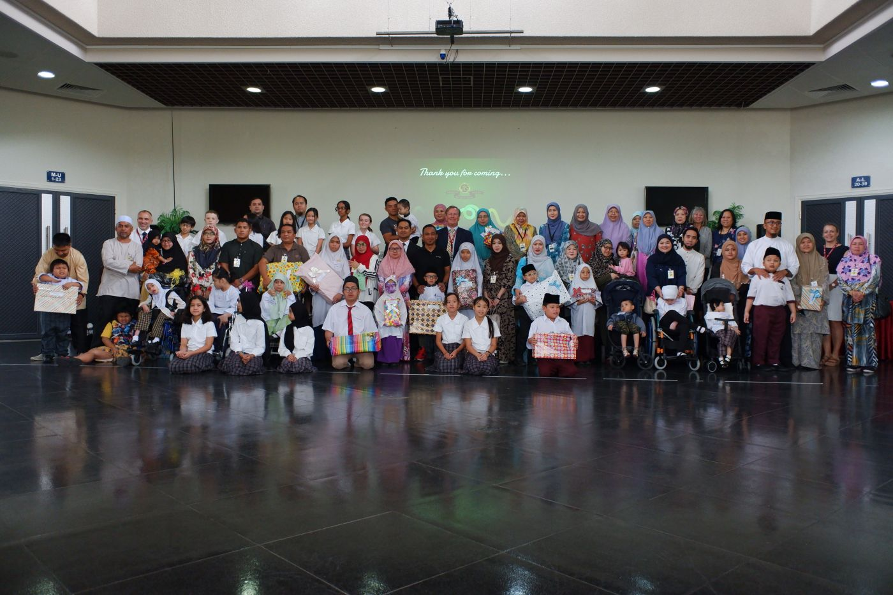
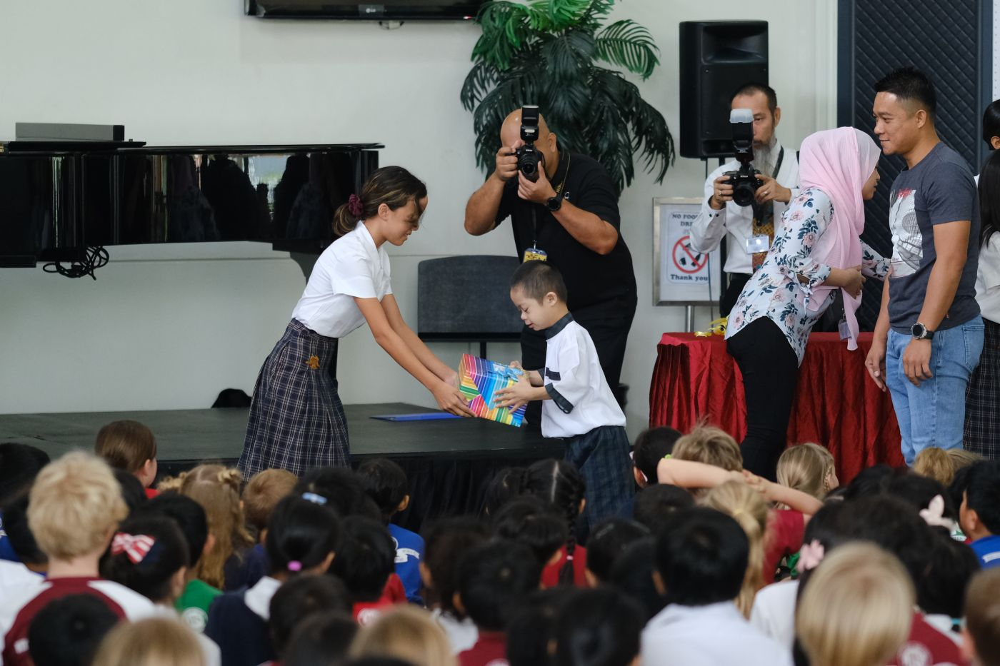
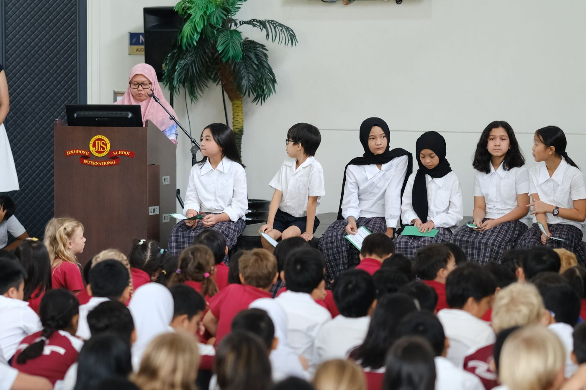

JIS Junior School hosts Handover Ceremony
Published on Jun 10, 2021
At the handing over ceremony, the student council introduced the activities of Fundraising Week and performed ‘World in Union’ sung by all students from Junior School. Jerudong International School supports a number of local charities and in February this year, the Junior School raised $13,000 at their annual Fundraising Week. The money raised at JIS Junior School’s Fundraising Week is for children with special needs in Brunei. The children are chosen in consultation with the Special Needs Unit at the Ministry of Education and this enables JIS’ Junior School to present children with equipment such as laptops, wheelchairs and a variety of other learning resources to help them with their learning and mobility needs.
Fundraising Week provides a great opportunity for our children to actively participate in giving back to the wider Brunei community. “We talk a lot about achieving excellence in JIS. We expect our children to be not only academically excellent but also display excellence in the way they live their lives and make a positive impact on others. By learning that they can contribute to the wider Brunei community, helping those who need it, we begin developing excellent citizens from a very early age,” believes Paul Bannister, Head of Junior School.
“Seeing the difference that they can make to help other children overcome challenges in their education really helps them to understand the benefits of giving to others.”
JIS Junior School students were enthusiastic in participating throughout the week’s activities as it was one of the most anticipated events in their academic calendar. The fun activities were namely, ‘Guess the number of Items in the Jar’, ‘Wet Sponge a Teacher’, ‘Bake Sale’, ‘Coin Drop’, ‘Launch a Teddy’ and ‘Rainbow Dress up Day’.
On the last day of Fundraising Week, Junior School students enjoyed a ‘Rainbow’ dress up day where children came to school dressed in as many rainbow colour clothes as they could with every participating student donating $2 for charity. One of the most popular activities was the ‘Coin Drop’. Students collected as many coins as possible and then rolled the coins down designated pipes from the first floor of the Junior School buildings to the ground level into troughs of water.
Every year, the Fundraising Week’s Bake Sale is managed by the Year 6 students from the Junior School Council, selling baked goods during their morning break. ‘Launch a Teddy’ was a fun challenge where students contributed $2 to participate and were challenged to design the best parachute to keep their teddy bear in the air for the longest time possible. The ‘Wet Sponge a Teacher’ was another huge success where a number of teachers volunteered to be soaked by the students.
Mrs Julia Rickell, Year 2 Teacher at JIS has been organizing Fundraising Week for over 20 years now and it has become an annually successful event in Junior School.
Paul Bannister expresses the hard work and dedication shown by the students during Fundraising Week was admirable and inspiring. “We are immensely proud of the Junior School children, parents and teachers for raising this money and we look forward to seeing how the learning resources we can now provide make a difference to those children who receive them.”
  
About Jerudong International School
Jerudong International School was started in 1997. It presently has around 1650 international and Bruneian students aged from 2 years to 19 years. Students study a British International Curriculum from ages 2 years to 3 years. From 14 years to 16 years, students study the I/GCSE programmes. Senior students may choose between the A Level programme and the International Baccalaureate Diploma Programme for their pre University course. JIS has a thriving boarding house for up to 200 boarders.
|
Address:
Jerudong International School, PO Box 1408, Bandar Seri Begawan, Negara Brunei Darussalam, BS8672 Tel: +673 241 1000 Fax: +673 241 1010 |
School Opening Hours
Monday – Thursday: 7.30am – 3pm Friday: 7.30am – 11.45am Email: enrol@jis.edu.bn |
Website & Social Media
Website: www.jis.edu.bn Facebook: www.facebook.com/jisbruneidarussalam Twitter: www.twitter.com/jisbrunei Instagram: www.instagram.com/jisbrunei YouTube: www.youtube.com/jisbrunei |


Contact Infor
Detech Tower 8 Tôn Thất Thuyết, Nam từ liêm, Hà Nội
+841 2345 9999Write to us
SchoolsInfor.com
Newsletter
Sign up for our newsletter to get the latest news and updates on schools.